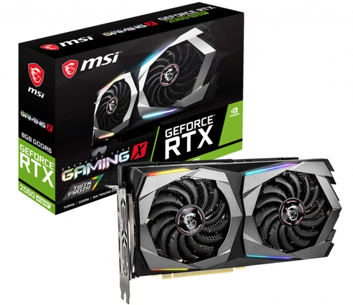
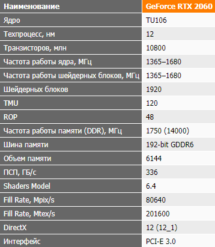
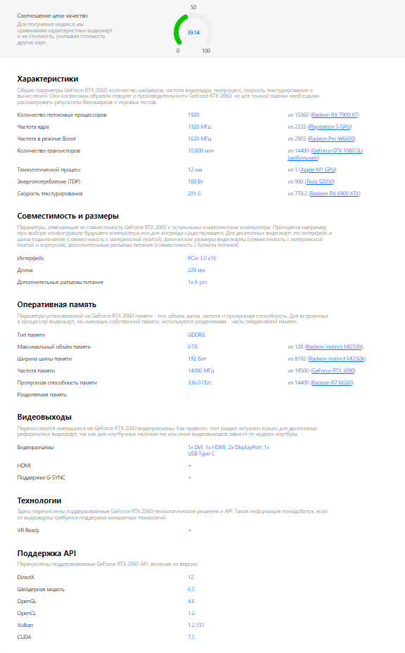

Описание товара:
Продолжаем знакомство с новыми GeForce RTX Super. На очереди обновленная версия GeForce RTX 2060.
Посмотрим, каковы преимущества Super-версии над оригинальной видеокартой. И заодно подведем некоторые общие итоги для среднего
класса устройств, сведя в одном тестировании разные версии GeForce RTX 2060, GeForce RTX 2070, Radeon RX 5700 XT, Radeon RX 5700
и старшие видеокарты от NVIDIA и AMD. Поскольку мы подробно разбирали характеристики новых моделей Super в прошлом материале,
сразу перейдем к обзору видеокарты в исполнении MSI.
Характеристика:

Подробное описоние товара:
